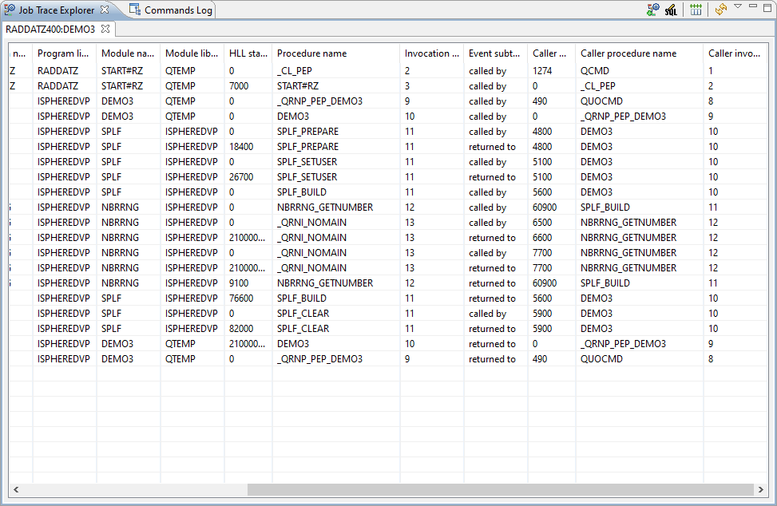
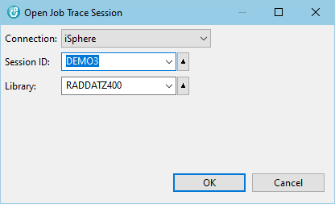

The Job Trace Explorer is supposed to be used for viewing and filtering the job trace
entries produced by the STRTRC/ENDTRC commands.
The Job Trace Explorer is supposed to be used for viewing and filtering the job trace
entries produced by the STRTRC/ENDTRC commands.
You can open the Job Trace Explorer perspective from 'Window -> Open Perspective -> Other...'. The perspective looks like that:

The following actions are available:
 | Open a dialog for selecting the trace session. | |
 | Opens an SQL editor for editing the SQL WHERE clause for filtering the job trace entries. (Local operation that does not contact the host system.) | |
 | Resets all columns to their default size. | |
 | Reloads the job log entries. (Remote operation that reloads the data from the host.) |
Click the Open Job Trace Session button at the top of the Job Trace Explorer view:
Select the connection and fill in the session ID and library name and click the [OK] button.

You can use the SQL editor to filter job trace entries. Click the Edit SQL button at the top of the Job Trace Explorer view to open the SQL editor:
The SQL Editor is used to enter a SQL WHERE condition for selecting a subset of the available job trace entries entries. Enter the WHERE condition and then click the Execute button or press Ctrl+Enter to execute the query. Refer to the SQL Reference to see the list of available functions.

Use Ctrl+SPACE for content assistance.

The following actions are available:
| Ctrl+SPACE | - | Content assist. |
| Add Field | - | Content assist. |
| Clear | - | Clears the where condition. |
| Ctrl+ENTER | - | See: Filter |
| Filter | - | Executes the query with the current where condition to create a subsetted list of the available job trace entries. |
| Notice: Filtering job trace entries is a local task, which does not reload the entries from the host. |
| Notice: The SQL WHERE clause is applied to the records that have been downloaded to the PC. It must be specified in the iSphere SQL syntax, which in most cases matches the IBM i SQL syntax. |